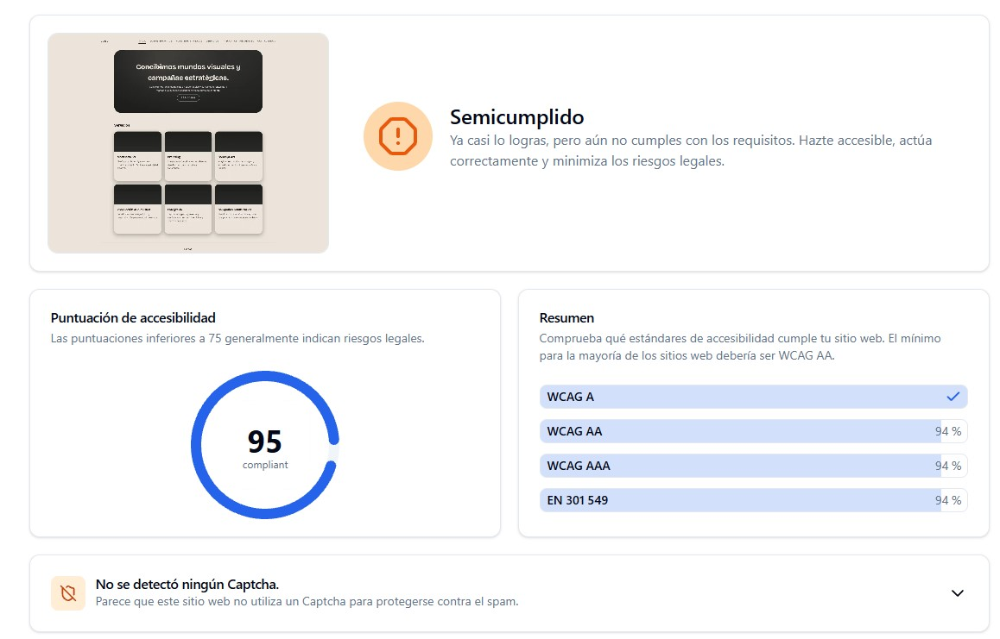
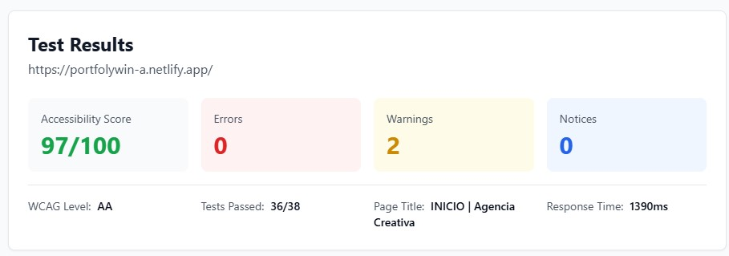
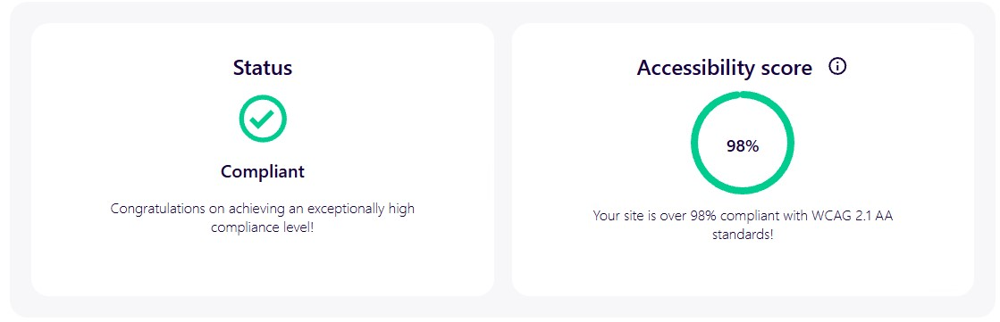
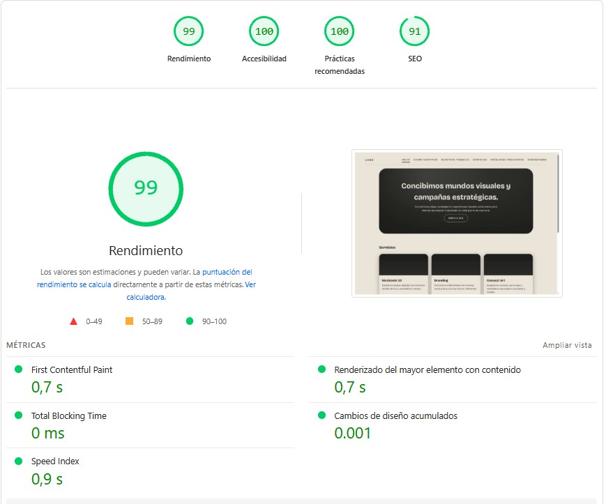
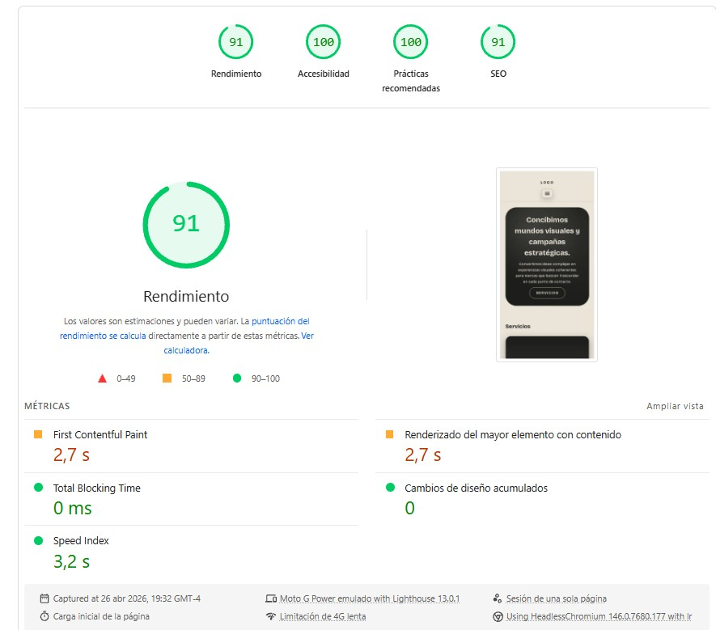
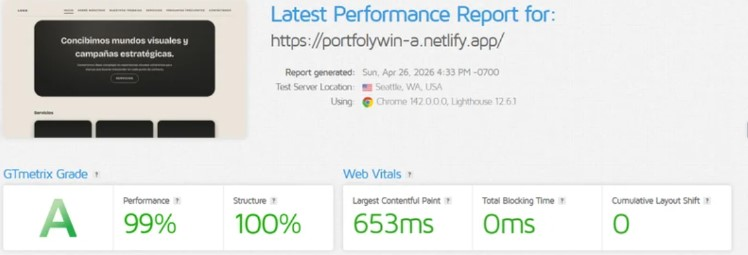

📊 Métricas de Rendimiento (WPO)
Web Performance Optimization - Optimización del rendimiento web para máxima velocidad y eficiencia.






♿ Estándares de Accesibilidad (WCAG)
1. Introducción
En el desarrollo de interfaces digitales, la optimización de recursos pesados constituye un factor clave para garantizar una experiencia de usuario eficiente, fluida y accesible. En el caso de WIN.A, cuya propuesta se basa en una fuerte carga visual y conceptual, resulta fundamental implementar estrategias que permitan reducir los tiempos de carga sin comprometer la calidad estética ni la coherencia de la identidad de marca.
Asimismo, al tratarse de un proyecto desarrollado en equipo, se incorporarán herramientas colaborativas que faciliten la gestión, organización y acceso a los recursos digitales.
2. Optimización de imágenes
Las imágenes representan uno de los principales factores que influyen en el rendimiento de un sitio web. Por ello, se establecerá una resolución máxima de exportación de 1920 píxeles de ancho para pantallas de alta resolución, junto con versiones adaptativas para dispositivos móviles.
Se priorizará el uso de formatos modernos como WebP, los cuales permiten una mayor compresión en comparación con formatos tradicionales como JPG o PNG, reduciendo significativamente el peso de los archivos sin afectar la calidad visual.
3. Uso de gráficos vectoriales (SVG)
Para elementos gráficos esenciales como el logotipo y los iconos de navegación, se empleará el formato SVG (Scalable Vector Graphics). Este formato garantiza una alta calidad visual en diferentes resoluciones y dispositivos, además de ser liviano y eficiente para su carga en entornos digitales.
4. Compresión y optimización de archivos
Se implementarán procesos de compresión de imágenes, utilizando herramientas que reduzcan el peso de los archivos sin comprometer su calidad perceptual.
De manera complementaria, se aplicará la minificación de archivos CSS y JavaScript, eliminando elementos innecesarios como espacios y comentarios, lo que contribuye a mejorar el rendimiento general del sitio web.
5. Optimización de contenido multimedia
En relación con los recursos audiovisuales, se evitará la carga directa de archivos pesados dentro del sitio web. En su lugar, se optará por la incrustación (embed) de contenido multimedia desde plataformas externas, lo que reduce el consumo de recursos del servidor.
Adicionalmente, se aplicará la técnica de lazy loading (carga diferida), permitiendo que las imágenes y elementos pesados se carguen únicamente cuando el usuario los visualiza en pantalla, optimizando así el tiempo de carga inicial.
6. Gestión de recursos y trabajo colaborativo
Para la organización y manejo de los recursos digitales, se utilizará la plataforma Google Drive, donde se almacenarán todos los archivos del proyecto, incluyendo imágenes, elementos gráficos, documentos y recursos multimedia.
En lugar de cargar archivos pesados directamente en la interfaz web, se priorizará el uso de enlaces externos (links) provenientes de esta plataforma, lo que permitirá reducir el peso del sitio y facilitar la actualización de contenidos sin afectar la estructura principal.
Asimismo, el uso de Google Drive favorecerá el trabajo colaborativo, permitiendo que todos los integrantes del equipo accedan, editen y gestionen los recursos en tiempo real, optimizando la coordinación y el flujo de trabajo del proyecto.
7. Conclusión
La implementación de estrategias de optimización en la interfaz web de WIN.A permite establecer un equilibrio entre calidad visual, eficiencia técnica y organización del trabajo en equipo. El uso de herramientas colaborativas, junto con la correcta gestión de recursos digitales, contribuye a una experiencia de usuario más fluida y a un desarrollo más estructurado del proyecto.
De esta manera, la optimización no solo se entiende como un aspecto técnico, sino también como un elemento estratégico que fortalece tanto el producto final como la dinámica de trabajo del equipo.